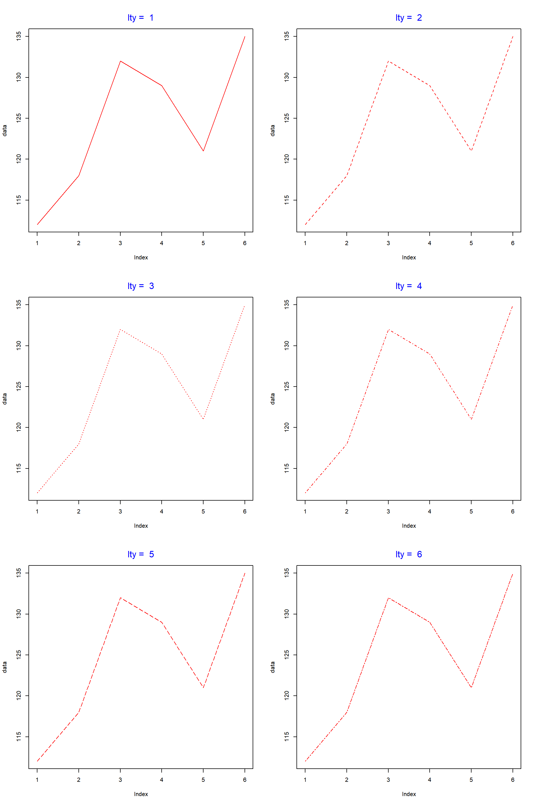
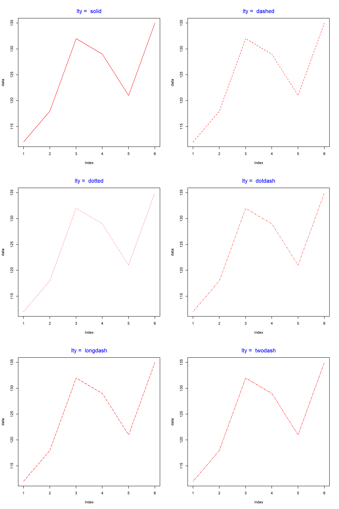

Introduction
This is the fourth post in the series Data Visualization With R. In the previous post, we learnt how to build scatter plots. In this post, we will build line graphs. To be more specific we will learn to
- create line plots
- add color to lines
- modify line type/style
- modify line width
- add points to the lines
- modify axis range
- add additional lines to the plot
Line Graph
To build a line graph, we will learn a new argument in the plot() function called type. It allows us to specify the symbol that must be used to represent the data. Let us begin by building a simple line graph. We will use the AirPassengers data set in this post. Before we begin to build the plot, let us take a quick look at the data in order to understand what we are plotting.
head(AirPassengers)## [1] 112 118 132 129 121 135In order to build a line plot, we will set the type argument in the plot() function to l (line). There are other values which type takes but we will explore them later.
data <- head(AirPassengers)
plot(data, type = 'l')If you do not like plain lines, you can represent the data using lines interspersed with points by setting the type argument to b (both lines and points).
plot(data, type = 'b')Another option is to have the points and lines overplotted. It can be achieved by setting the type argument to o (overplotted).
plot(data, type = 'o')
You can also create lines without points but with breaks instead by setting the type argument to c.
plot(data, type = 'c')
Color
So now we know how to build a simple line graph. Let us now make this plot more elegant by modifying its appearance. Let us begin by adding some color to the line using the col argument in the plot() function.
plot(data, type = 'l', col = 'blue')If you have points along with the line, they will have the same color as well.
plot(data, type = 'b', col = 'blue')
Line Type
The line type can be modified using the lty argument. It takes values from 1 to 6 and the default value is 1. Below is an example:
plot(data, type = 'l', lty = 3)- 1:solid
- 2:dashed
- 3:dotted
- 4:dotdash
- 5:longdash
- 6:twodash
Let us look at all the line types in the below example:

Instead of specifying the numbers 1:6, you can use their description as well.

Line Width
The width of the lines can be modified using the lwd argument in the plot() function. The default value for width is 1.
plot(data, type = 'l', lwd = 2.5)
In the below example, we look at the width of the lines relative to the default value.

Enhance Points
We can enhance the points in the line plot in the same way as we enhanced the points in the scatter plot in this previous post. Let us look at an example:
plot(data, type = 'b', pch = 23, col = 'red', cex = 1.5)
We have used the pch, col and cex arguments to modify the shape, color and size of the points. One drawback of the above method is that the color of the line and the points will be the same. What if we want them to have different colors? The solution is as follows:
- build the line graph using the
plot()function - add the points to the above plot using the
points()function
In the next example, let us first build the line plot, add points using the points() function and then specify separate colors to the line and the points.
plot(data, type = 'l', col = 'red')
points(data, pch = 23, col = 'blue', bg = 'green', cex = 1.5)
Additional Lines
If you want to compare variables, you would want to add additional lines to the line graph. In R, this can be achieved using the lines() function. First we create the line plot using the base variable and then we can add as many lines as we want using the lines() function.
Before you add additional lines, it is important to ensure that the range of both the axis are modified to accommodate the data of the additional lines. If we do not modify the axis range, some of the lines will be outside the plot.
Let us now create a line plot and add an additional line using the lines() function.We will use some dummy data for this example:
data1 <- c(7.2, 7.6, 6.8, 6.5, 7)
data2 <- c(6.8, 7.2, 7.8, 7, 6.2)
plot(data1, type = "b", col = "blue")
lines(data2, type = "b", col = "red")
As you can see the second line is outside the plot. Let us recreate the plot but this time we will modify the range of the axis to accommodate the second line (data2).
plot(data1, type = "b", col = "blue", ylim = c(5, 9))
lines(data2, type = "b", col = "red")
Finally let us enhance the plot by adding a title and modifying the axis labels which we learnt in this first post of the series.
plot(data1, type = "b", col = "blue",
ylim = c(5, 9), main = 'Line Graph',
xlab = 'Index', ylab = 'Data')
lines(data2, type = "b", col = "red")
Summary
In this post, we learnt how to
- create line plots
- modify appearance of the line
- add points to the line plot
- add additional lines
In the next post, we will learn how to build bar plots which are used to visualize a single categorical data or the relationship between two categorical variables.